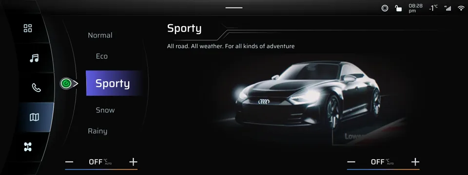

3D Asset
Production
Hard-surface modelling, UVs, texturing, shading, lighting, and rendering for maritime, oil & gas, and industrial environments. Experience creating procedural and reusable assets where helpful for production.
Technical art / 3D pipeline
Technical Artist
& 3D Generalist
Hanoi, Vietnam
2017 - Present
Profile
Technical Artist and 3D Generalist with experience in 3D production, procedural workflows, and tool development.
I work mainly with 3ds Max, Houdini, and pipeline tools. I have also used Unity for realtime visualization and a small interactive automotive prototype.
Core capabilities
01Hard-surface modelling, UVs, texturing, shading, lighting, and rendering for maritime, oil & gas, and industrial environments. Experience creating procedural and reusable assets where helpful for production.
Technical rigging, animation, FX, and CAD asset optimization for interactive applications.
Scripts and small internal tools for recurring production tasks.
Experience
02Tools & approach
Nguyen Duy Dung / Technical Artist
Tool development
03Small utilities and scripts used to handle repeated steps in 3D workflows.
Selected projects
04
Assessment project / Unity Automotive HMI test A Unity assessment prototype exploring vehicle views, UI states, lighting, and weather. Watch demo ↗ Prototype / Computer vision RoomVo-inspired material visualizer A work-in-progress prototype inspired by RoomVo, exploring physical-size floor materials on room images with metric plane fitting and perspective-aware texture mapping. View source ↗ Tool / BeamNG.drive / 3ds Max JBeam Visual Builder A 3ds Max/MaxScript tool made to help build and inspect BeamNG.drive JBeam vehicle structures, including nodes, beams, triangles, and flexbodies. View source ↗Tools & tech
Core tools
Realtime / interactive
AI image workflows
Education
Hanoi University of Architecture
2012 - 2017AnimMonster
2019